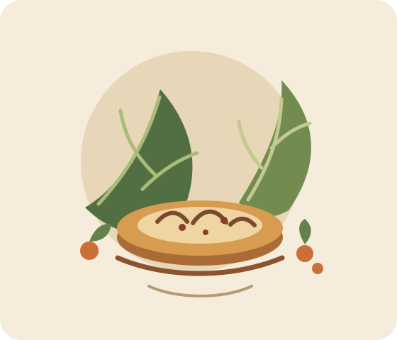

Alamat usaha CONTOH
Jl. Contoh Kuliner No. 10, Banda Aceh
Alamat contoh — ganti sebelum dipublikasikan.
Hangat dari dapur Aceh
Pilih makanan khas Aceh dengan mudah. Kenali rasa dan ceritanya sebelum menikmati bersama keluarga.
Contoh katalog: harga, alamat, ongkir, dan nomor WhatsApp pada situs ini perlu disesuaikan.

Mudah memilih
Pilihan keluarga
Pesan tanpa akun
Pilih menu, lengkapi pesanan, lalu lanjutkan di WhatsApp.
Lihat bahan, porsi, rasa, dan harga contoh.
Tentukan jumlah dan isi kontak seperlunya.
Pesan disiapkan. Kamu tetap perlu menekan kirim.

Masakan menyatukan rasa, keluarga, dan cerita.
Cerita yang terus diwariskan
Rempah, hasil bumi, dan kebiasaan makan bersama memberi warna pada hidangan Aceh.
Aceh berada di jalur pertemuan masyarakat dan perdagangan. Pengaruh Arab, India, dan Tiongkok sering dibahas dalam konteks budaya kawasan; hubungan spesifiknya dengan hidangan tertentu tetap perlu diperiksa melalui sumber sejarah dan komunitas setempat.
Catatan editorial: kisah asal-usul spesifik pada halaman ini berstatus perlu diverifikasi. Tidak ada tahun, tokoh, atau legenda yang disajikan sebagai fakta.
Kontak dan bantuan
Rincian di bawah adalah contoh. Ganti dengan informasi usaha yang benar.
Jl. Contoh Kuliner No. 10, Banda Aceh
Alamat contoh — ganti sebelum dipublikasikan.
Setiap hari, 09.00–21.00 WIB
Pastikan jadwal aktual dengan penjual.
Banda Aceh dan sekitarnya.
Jangkauan dan ongkir dikonfirmasi sebelum pembayaran.
Ilustrasi saja. Lokasi usaha belum diverifikasi.
Tanya lokasi ke penjualSebelum memesan
Jawaban sederhana untuk membantu pesananmu.
Pilih menu dan jumlah, buka keranjang, lalu isi nama dan nomor WhatsApp. Jika memilih antar, masukkan alamat. Pesan akan disiapkan di WhatsApp dan kamu perlu menekan tombol kirim di sana.
Tunai, transfer, dan QRIS pada form hanya simulasi pilihan. Pastikan metode, rekening, dan instruksi pembayaran langsung kepada penjual sebelum membayar.
Tarif pada situs ini hanya contoh. Konfirmasi jangkauan, biaya, dan estimasi pengiriman kepada penjual sebelum menyetujui pesanan.
Hubungi penjual sesegera mungkin melalui WhatsApp. Kebijakan pembatalan perlu disepakati dengan penjual dan tidak diproses otomatis oleh situs.
Baca informasi alergen pada detail menu dan konfirmasikan bahan serta kemungkinan kontaminasi silang dengan penjual sebelum memesan.
Informasi